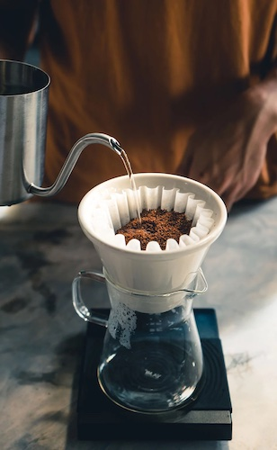
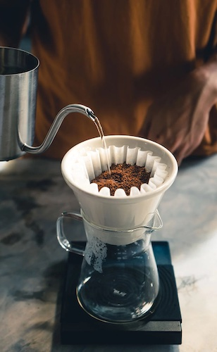

About Us
Life without coffee is a gloomy place. That’s why Gulp Roast has been proudly serving up fresh coffee to the San Francisco area since 2000. Our coffee is locally sourced with the most delicious blends coming directly to your home, right from coffee farmers near you. Our coffee makes even the most difficult days just a tad easier to get through.
For us, this isn’t just brewing coffee. This is an active life mission to bring our customers the most flavorful, full-bodied beverages we can get our hands on. Browse our site to learn more about our locations and sourcing techniques.
Contact Us 
